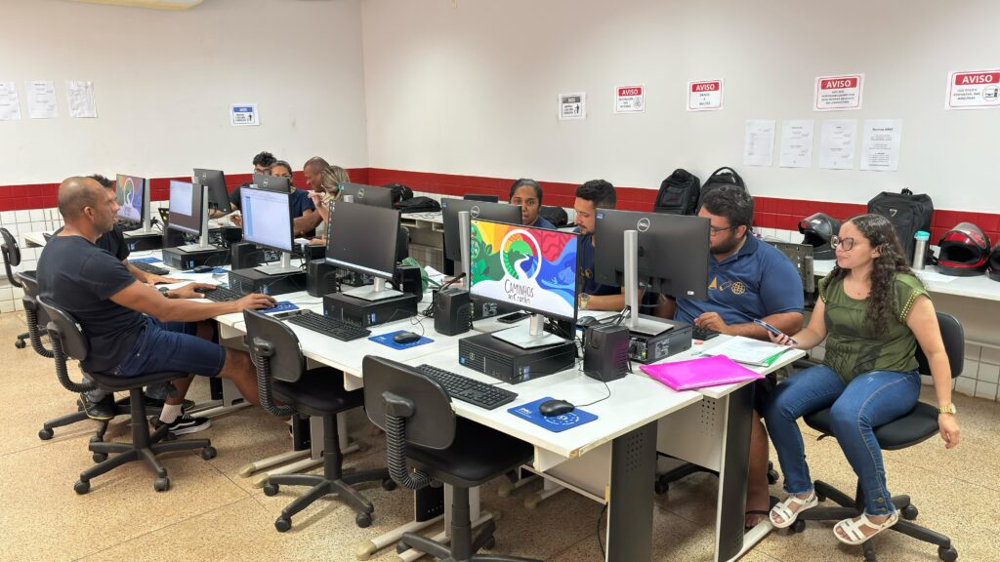

Manter uma rotina organizada no curso de Sistemas de Informação é essencial para equilibrar o aprendizado teórico com a prática de programação. Com a alta demanda de trabalhos acadêmicos, prazos de entregas e estudos diários, o planejamento correto evita o acúmulo de tarefas, reduz o estresse e garante um desempenho acadêmico eficiente.
Para um estudante da área de tecnologia, a organização diária vai muito além de guardar datas de provas: é a chave para o gerenciamento de projetos. Planejar a semana ajuda a estruturar o tempo de código, evita a sobrecarga na entrega de trabalhos práticos de última hora e garante espaço para o aprendizado contínuo de novas ferramentas e linguagens
A entrega do projeto final será no dia 15 de novembro.
O prazo poderá ser alterado pelo professor1.
| Dia | Disciplina | Horário | Atividade |
|---|---|---|---|
| Segunda | Programação | 18h30 | Aula |
| Modelagem | 20h10 | Aula | |
| Matemática Discreta | 21h | Aula | |
| Terça | Banco de Dados I | 20h10 | Exercícios |
| Quarta | Engenharia de Software | 18h30 | Trabalho em Grupo |
| Quinta | Redes | 20h10 | Estudo |
| Sexta | Desenvolvimento Web | 18h30 | Projeto |
| Atividade | Disciplina | Entrega | Status |
|---|---|---|---|
| Projeto HTML | Desenvolvimento Web | 10/04 | Em andamento |
| Lista de exercícios | Programação | 12/04 | Pendente |
| Trabalho | Banco de Dados | 15/04 | Concluído |
Como disse o professor: Aprender programação exige prática constante.
O aprendizado na área de tecnologia não acontece apenas durante as aulas. A prática, a realização de projetos e a resolução de problemas são fundamentais para o desenvolvimento profissional.
Para manter uma rotina de estudos produtiva e sem imprevistos, é essencial adotar estratégias de gestão de tempo.
Na química, a água é representada por H2O.
Na computação e matemática, uma variável de um vetor pode possuir um índice xi.
1 Consulte sempre o ambiente virtual da disciplina.